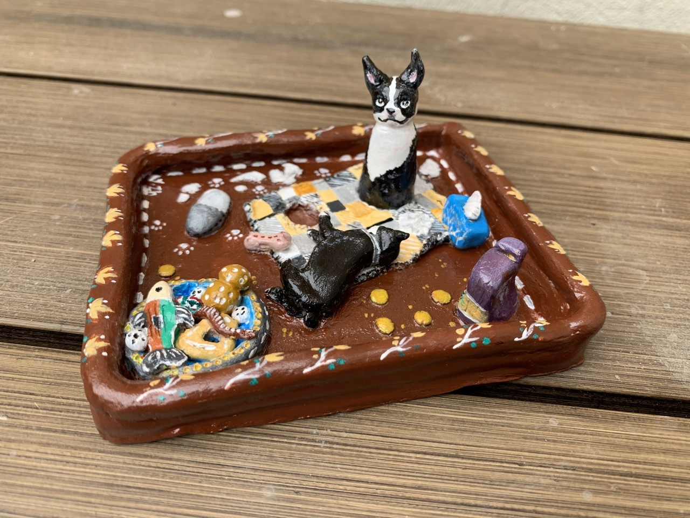
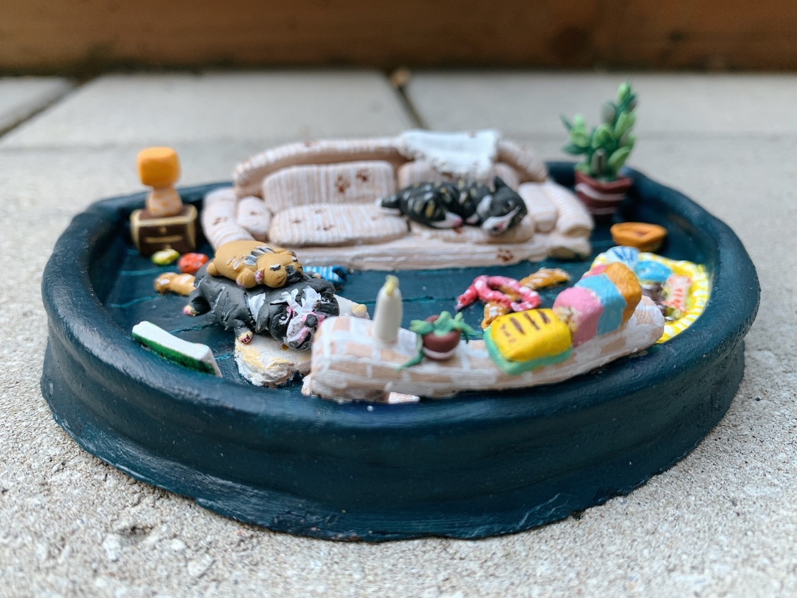
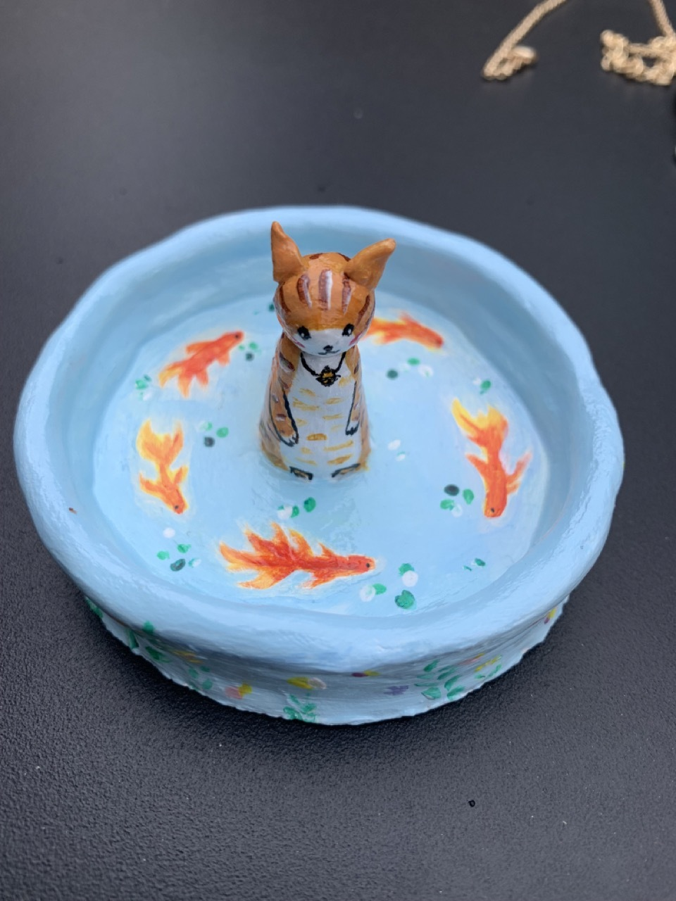
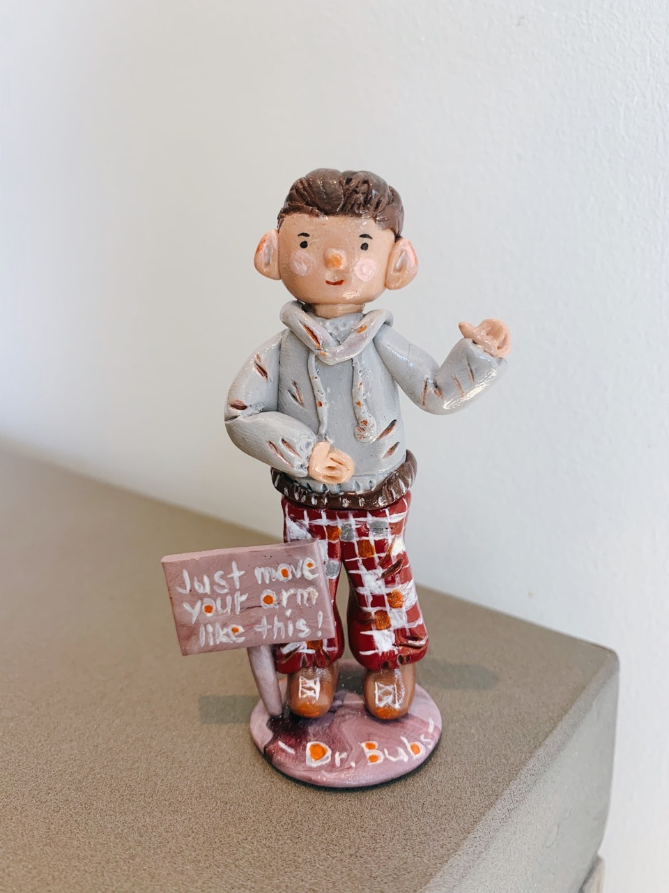
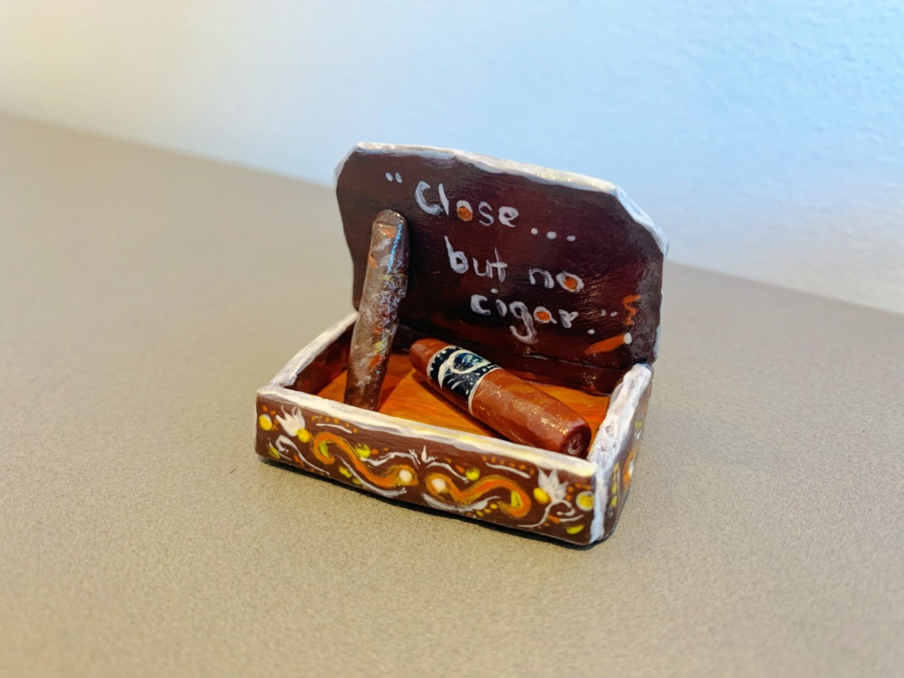

Hand sculptured, painted, and designed clay works using mostly sculpture and polymer clay. Items made include sentimental items for pets, necklace and ring holder, as well as figurines. Each of them preserves a special memory.

"I Love Chewing Mom's Blanket!"
"我爱咬坏妈妈的毯子!"
A normal day in two Boston terriers' life: tearing apart tissues, chewing on blankets, and trying to get into their snack packs.

Lounge Where?
躺平
When you have too many dogs, it is impossible to have a neat living room. But again, there is no such thing as too many dogs.

Early Cat Gets the Fish
早起的鸟儿有鱼吃
A ring holder at day, a hungry cat catching fish at night.

The Chiropractor
理疗师
If only becoming a chiropractor is that easy!

Close... But No Cigar!
就差...一点点!
Stand owner at the carnival shout this phrase when the player miserably failed to win. But why were people handing out cigars as prize to children at the first place?